Four Word Pass
11 Devpost gallery images captured from the hosted PayPal sandbox on October 9, 2026. Every PNG uses a 3:2 ratio and is smaller than 5 MB. Click an image to open the original.

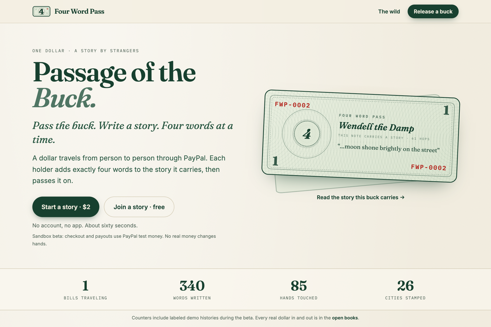
01 · Passage of the Buck
A dollar carries a story from person to person, four words at a time. The hosted prototype uses PayPal sandbox test money.

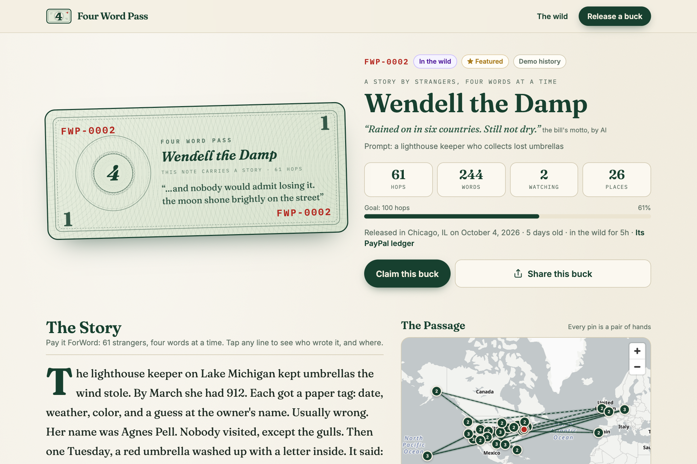
02 · Meet Wendell the Damp
Every bill gets a name, a voice and a journey. Wendell is a labeled demo bill with simulated early history.

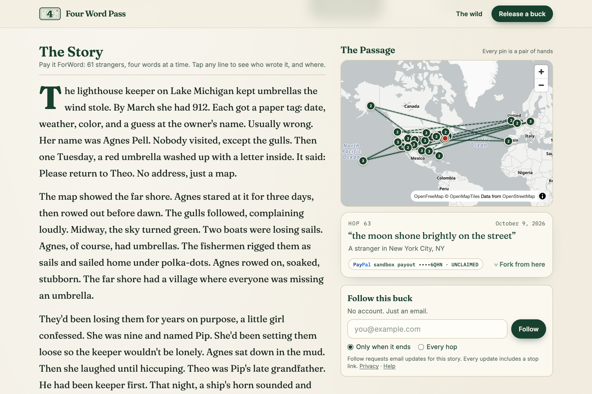
03 · The Story and The Passage
Read the story beside its city-by-city route, then inspect a hop and its masked PayPal receipt.
FWP-0002 has labeled demo history; its latest displayed receipt is a PayPal sandbox payout.

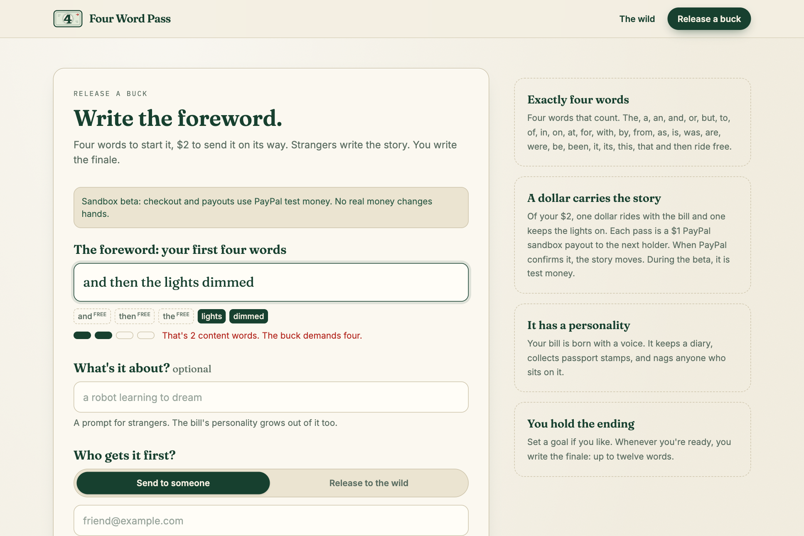
04 · Four words that count
The live word counter counts “lights” and “dimmed”; connecting words ride free.

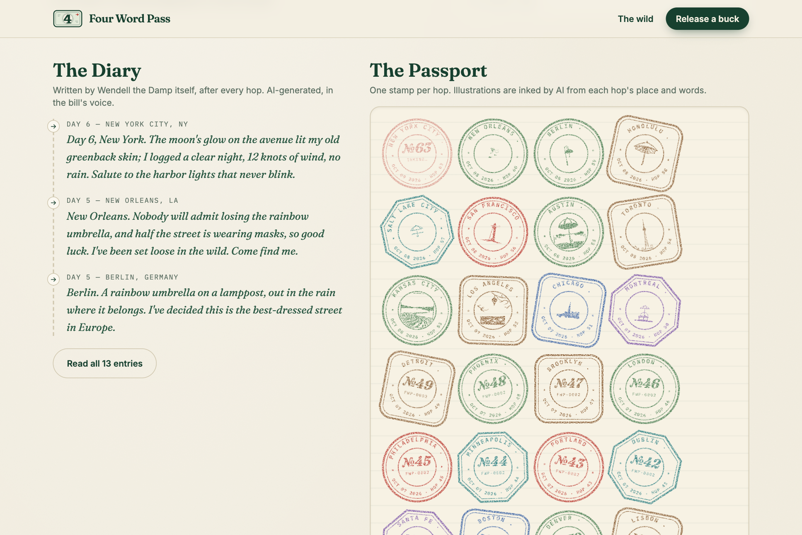
05 · The Diary and The Passport
The bill narrates its travels in an AI-written diary and collects illustrated city stamps.
Wendell is a demo bill. The newest stamp is visibly still inking; completed historical stamps are shown as rendered.

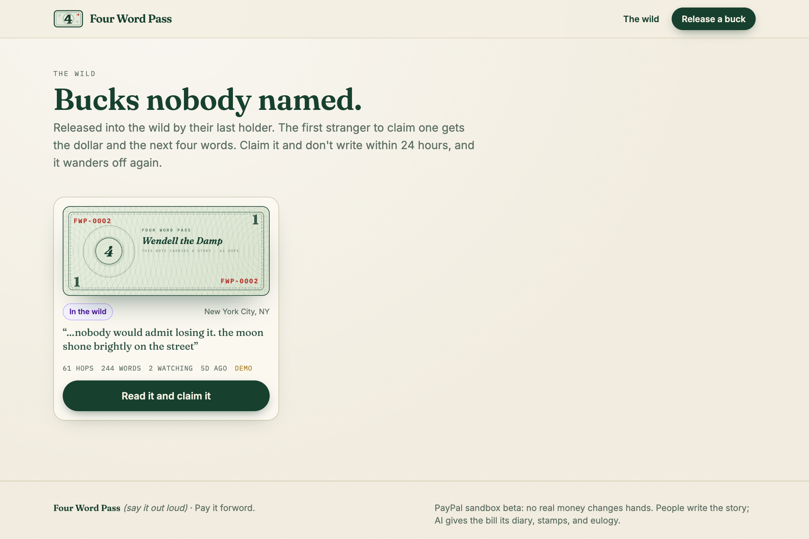
06 · Join from the wild
A bill released to the wild waits for a stranger to claim it and add the next four words.
Only the public list is opened; no bill is claimed.

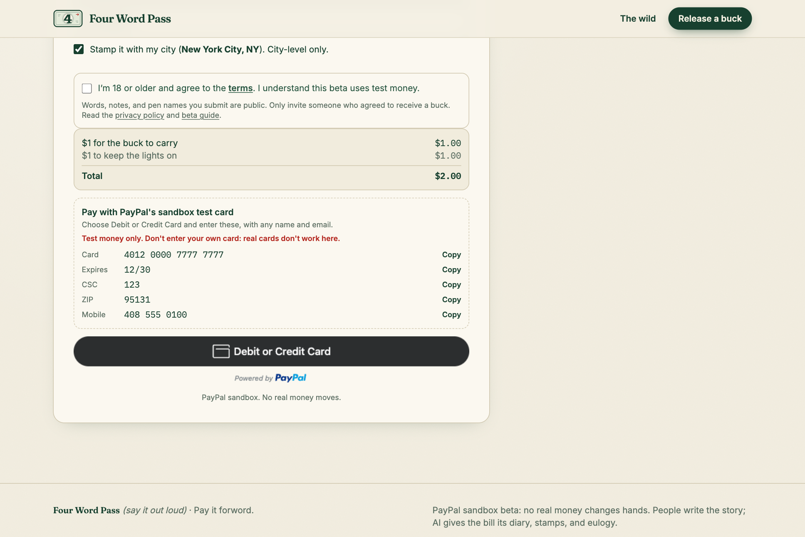
07 · Sandbox checkout
Starting a story costs $2 in PayPal sandbox test money. The page provides a published test card and PayPal’s checkout button.
Unsubmitted form with example.com sample values. No order was created, no payment was submitted and no email was sent.

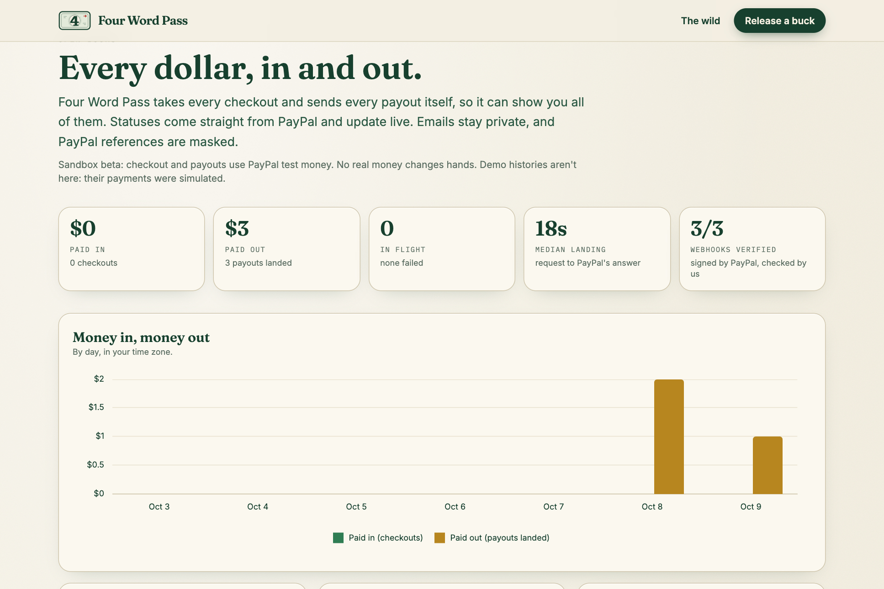
08 · Open Books
A public ledger shows the observed PayPal sandbox totals and payments over time. Demo payments are excluded.
At capture: $0 paid in, $3 paid out, 3 sandbox payouts. These are current test counts, not adoption or real-money metrics.

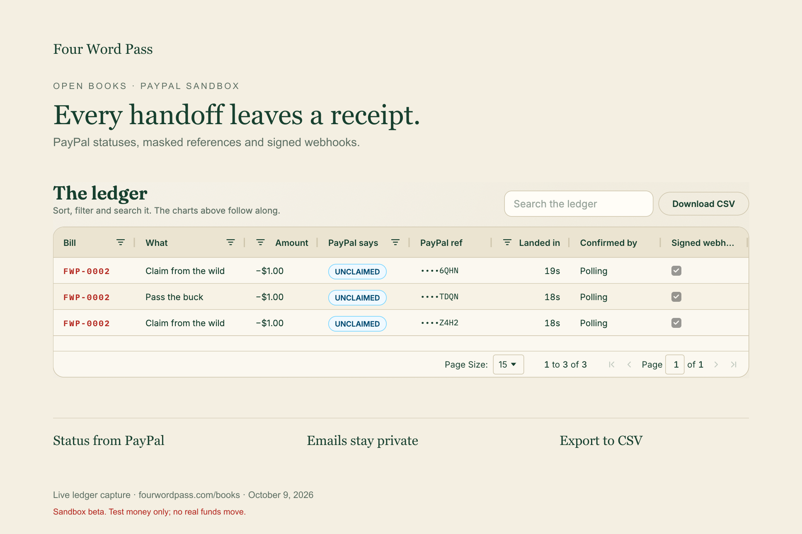
09 · The PayPal ledger
The ledger exposes PayPal status, masked references, landing times and webhook confirmation without publishing email addresses.
Gallery card with an unaltered screenshot of the live ledger and a caption outside it. The date and empty hop columns were hidden with AG Grid’s normal drag-out interaction to show payment verification. Three observed sandbox payouts.

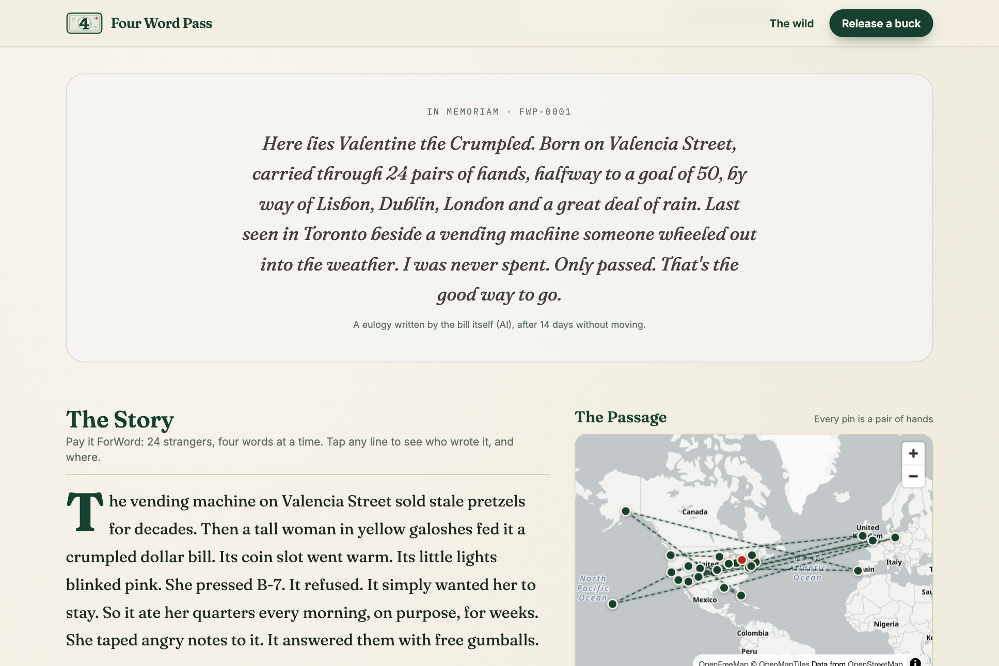
10 · A bill’s own eulogy
A bill that has stopped traveling writes a eulogy in its own voice. Valentine’s journey is labeled demo history.

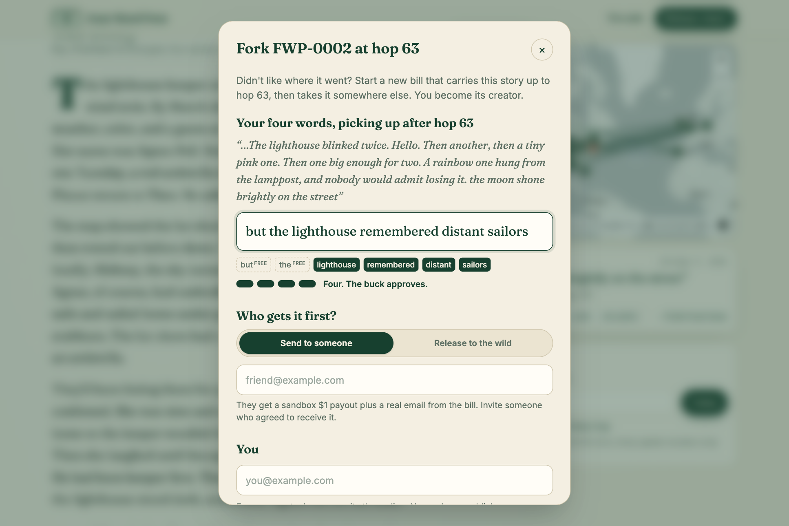
11 · Fork the story
Start a new branch from a chosen hop and carry the story in another direction.
Fork dialog only. No checkout, branch, payout or email is created.